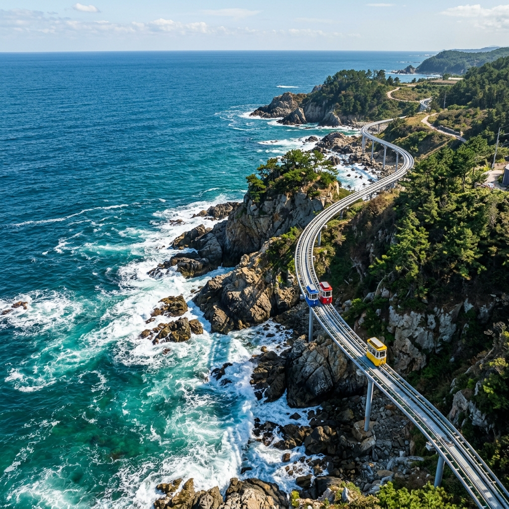
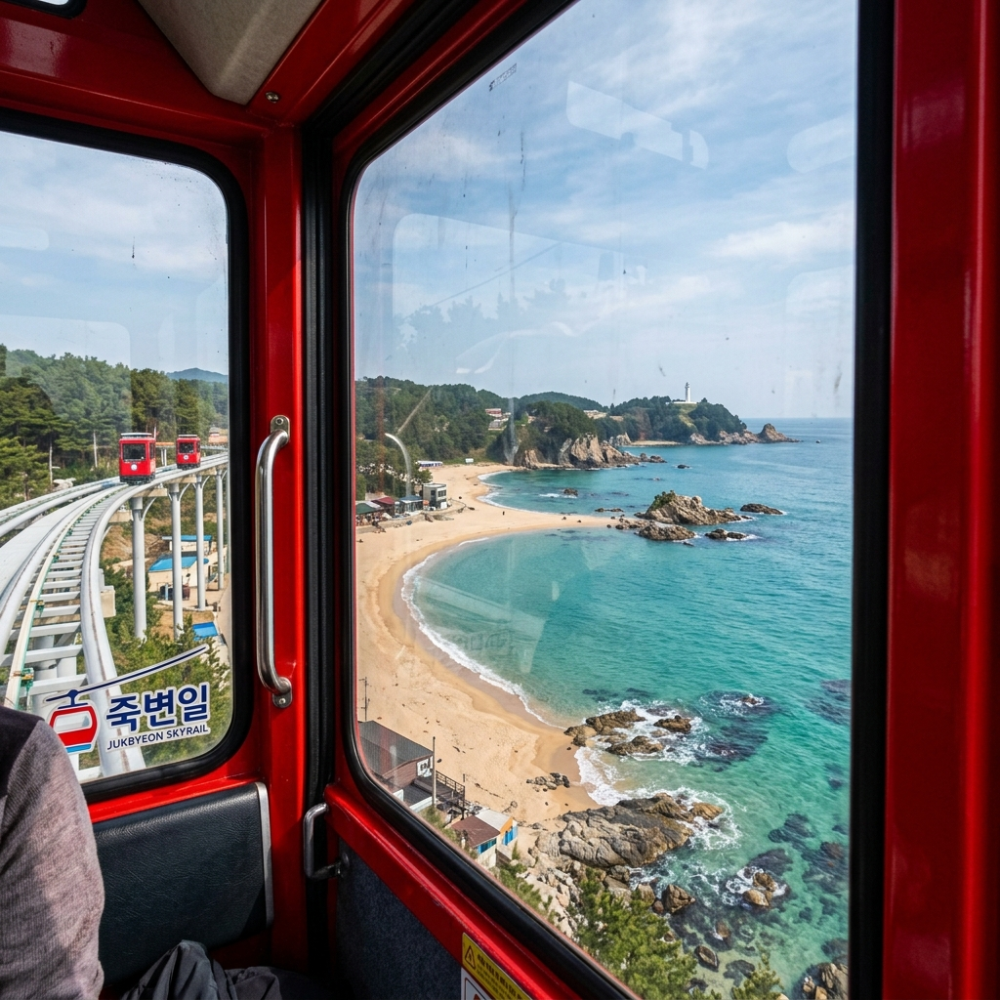
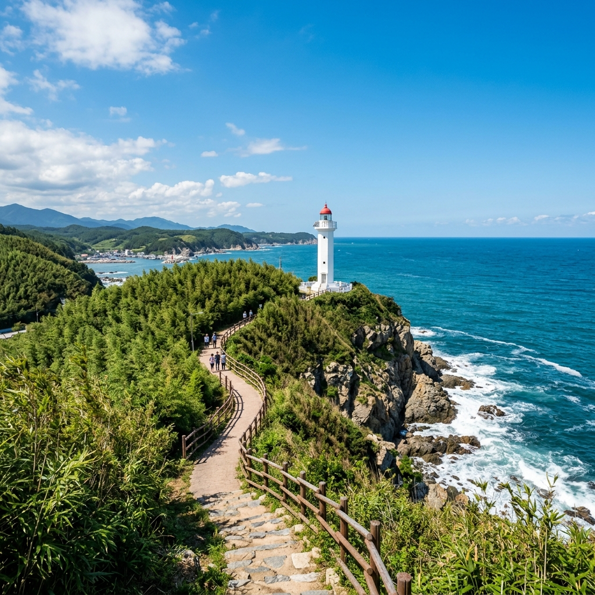

울진 죽변 스카이레일 정복하기: 동해안 최고의 바다 뷰와 예약 꿀팁
경북 울진의 푸른 바다 위를 소리 없이 가로지르는 죽변 스카이레일은 이제 동해안 여행의 필수 코스로 자리 잡았습니다. 아찔한 해안 절벽과 에메랄드빛 바다를 가장 가까이에서 만끽할 수 있는 이 특별한 모노레일은 매일 수많은 관광객이 몰리는 핫플레이스인데요. 이번 포스팅에서는 현장 예매 성공 전략, 최고의 뷰 포인트, 그리고 주변 여행지 연계 방법까지 상세히 안내해 드립니다.
1. 울진 죽변 스카이레일이란? 동해의 비경을 달리는 모노레일
죽변 스카이레일은 울진군 죽변항에서 출발하여 하트해변을 지나 봉평해수욕장까지 이어지는 해안선 위에 설치된 자동 궤도 차량입니다. 최대 11m 높이의 레일 위를 느린 속도로 이동하기 때문에, 마치 바다 위를 걷는 듯한 착각을 불러일으키는데요. 총 길이는 약 2.4km로 왕복 기준 약 40분에서 1시간 정도가 소요되는 느림의 미학을 담은 여행입니다.
차창 밖으로 펼쳐지는 동해안의 기암괴석과 거센 파도는 보는 것만으로도 가슴이 뻥 뚫리는 시원함을 선사합니다. 특히 전 구간이 무인으로 운행되어 가족, 친구, 연인끼리 오붓하게 프라이빗한 시간을 보낼 수 있다는 점이 큰 장점입니다. 울진의 청정 바다를 한눈에 담을 수 있는 스카이레일의 매력 속으로 여러분을 초대합니다.

동해안의 웅장한 해안선을 따라 달리는 스카이레일의 모습 / AI 제작 이미지
2. 100% 성공하는 예약 및 이용 시간 안내
죽변 스카이레일은 현재 온라인 예약과 현장 발권을 병행하고 있습니다. 주말이나 공휴일에는 예약이 금방 마감되므로, 방문 최소 일주일 전에는 공식 홈페이지를 통해 미리 예매하시는 것이 가장 확실합니다. 현장 발권의 경우 대기 시간이 2~3시간 이상 발생할 수 있으며, 이른 오후에 매진되는 경우도 빈번합니다.
운영 시간은 동절기(11월~3월) 기준 오전 9시 30분부터 오후 5시 30분까지이며, 하절기에는 조금 더 연장 운영됩니다. 추천 방문 시간대는 오전 첫 타임이나 오후 4시 이후입니다. 오전에는 바다 윤슬이 아름답고, 늦은 오후에는 붉게 물드는 노을과 함께 로맨틱한 분위기를 만끽할 수 있습니다. 기상 악화 시 운행이 중단될 수 있으니 방문 전 날씨 확인은 필수입니다.
3. 이용 요금 및 탑승 정원 정보
스카이레일 차량 한 대당 최대 탑승 인원은 4인입니다. 요금은 차량 한 대 기준으로 책정되는데, 인원수에 따라 조금씩 차이가 있습니다. 1~2인 탑승 시 21,000원, 3인 28,000원, 4인 35,000원 선으로 형성되어 있습니다(현재 기준). 울진군민이나 단체 고객은 별도의 할인이 적용되니 신분증을 반드시 지참해 주세요.
혼자 탑승하더라도 차량 한 대를 온전히 사용하기 때문에 1~2인 요금을 지불해야 합니다. 아이들과 함께 방문하는 가족 단위 여행객들에게는 매우 합리적인 가격대이며, 반려동물은 전용 케이지에 넣은 상태에서만 탑승이 가능합니다. 티켓 한 장으로 얻을 수 있는 시각적 쾌락과 힐링은 가격 그 이상의 가치를 증명합니다.

스카이레일 차창 너머로 펼쳐지는 에메랄드빛 하트해변의 장관 / AI 제작 이미지
4. 놓칠 수 없는 뷰 포인트: 하트해변과 폭풍 속으로 세트장
탑승 중 가장 먼저 만나게 되는 절경은 하트해변입니다. 위에서 내려다보면 해안선의 모양이 완벽한 하트 형태를 띠고 있어 붙여진 이름인데요. 투명한 바닷물과 하얀 파도가 어우러진 하트해변은 스카이레일 여행의 하이라이트입니다. 이곳을 지날 때 카메라 셔터를 누르는 소리가 가장 많이 들립니다.
하트해변 바로 위 언덕에는 과거 드라마 '폭풍 속으로'의 촬영 세트장이 위치해 있습니다. 붉은 지붕의 이국적인 집과 등대가 어우러진 풍경은 마치 지중해의 어느 마을에 온 듯한 착각을 불러일으킵니다. 스카이레일 레일이 이 세트장 바로 옆을 지나가기 때문에 가장 입체적이고 아름다운 구도로 풍경을 감상할 수 있습니다.
5. 탑승 전후 즐기는 죽변항 미식 기행
죽변항은 동해안의 주요 어항답게 신선한 해산물이 넘쳐납니다. 스카이레일 탑승 전후로 죽변항 시장이나 인근 식당가에서 울진의 맛을 느껴보세요. 특히 지금 시기에는 물회와 게짜박이를 강력 추천합니다. 싱싱한 활어와 새콤달콤한 육수가 어우러진 물회는 여행의 피로를 단숨에 날려줍니다.
울진 하면 떠오르는 대게와 홍게 요리도 빠질 수 없습니다. 죽변항 주변에는 수많은 대게 전문점들이 즐비하며, 저렴하게 드시려면 수산물 직판장에서 직접 구매하여 초장집에서 상차림비를 내고 드시는 방법도 좋습니다. 바다 향 가득한 식사는 스카이레일의 감동을 더욱 진하게 만들어 줄 것입니다.
6. 죽변등대와 대나무 숲길 '용의 꿈길' 산책
스카이레일 탑승장 바로 인근에는 100년 이상의 역사를 자랑하는 죽변등대가 우뚝 솟아 있습니다. 하얀 등대와 푸른 바다의 조화는 그 자체로 훌륭한 피사체가 됩니다. 등대 주변으로 조성된 '용의 꿈길' 대나무 숲 산책로는 시원한 그늘과 함께 바다 바람을 느낄 수 있는 최고의 힐링 코스입니다.
'죽변(竹邊)'이라는 이름답게 이곳에는 '소릿대'라고 불리는 대나무가 가득합니다. 사그락거리는 대나무 잎 소리를 들으며 걷다 보면 어느새 마음이 평온해지는 것을 느낄 수 있습니다. 산책로 중간중간 설치된 전망대에서 바라보는 스카이레일의 모습 또한 매우 이색적이니 꼭 한번 걸어보시길 권장합니다.

푸른 하늘과 극명한 대비를 이루는 하얀 죽변등대의 위엄 / AI 제작 이미지
7. 연계 관광 추천: 성류굴과 불영사 계곡
울진 여행을 더욱 풍성하게 만들고 싶다면 성류굴을 방문해 보세요. 천연기념물로 지정된 성류굴은 신비로운 석순과 종유석이 가득한 지하 세계를 보여줍니다. 스카이레일의 탁 트인 풍경과는 상반된 정적인 아름다움을 느낄 수 있는 곳입니다.
드라이브를 즐기신다면 불영사 계곡 노선을 추천합니다. 굽이굽이 이어지는 계곡물과 기암괴석이 어우러진 불영사 계곡은 우리나라에서 가장 아름다운 드라이브 코스 중 하나로 손꼽힙니다. 계곡 끝에 위치한 고즈넉한 사찰 불영사에서 잠시 마음을 비워내는 시간을 가져보시는 건 어떨까요?
8. 사진 촬영 꿀팁: 인생샷을 위한 카메라 세팅
스카이레일 차량 유리는 약간의 반사가 있을 수 있습니다. 반사를 최소화하려면 렌즈를 유리창에 바짝 붙여서 촬영하는 것이 좋습니다. 또한 차량이 계속 이동하므로 셔터 속도를 조금 빠르게 설정하여 흔들림 없는 사진을 얻으시길 바랍니다. 인물 사진을 찍을 때는 창밖의 바다 배경이 충분히 담기도록 광각 렌즈를 활용해 보세요.
스마트폰 사용자의 경우 '인물 사진 모드'보다는 일반 사진 모드에서 노출 값을 바다 쪽에 맞춰 조금 어둡게 조절하면 더욱 깊이 있는 푸른색을 담을 수 있습니다. 차량 내부의 빨간색 프레임과 바다의 파란색이 보색 대비를 이루어 아주 감각적인 사진이 탄생할 것입니다.
9. 에디터가 전하는 울진 여행의 마무리
울진 죽변 스카이레일은 단순히 이동 수단이 아닌, 자연과 기술이 만나 우리에게 선사하는 '바다 위 휴식처'입니다. 느릿하게 움직이는 차량 안에서 바다를 바라보고 있노라면 복잡했던 머릿속이 맑아지는 기적을 경험하게 됩니다. 바쁜 일상에 지쳐 있다면, 이번 주말은 아무 생각 없이 동해의 푸른 물결 위를 떠다녀 보시는 건 어떨까요?
울진의 바람과 파도, 그리고 스카이레일이 만드는 평화로운 조각들을 모아 소중한 추억의 앨범을 채워보세요. 여러분의 울진 여행이 푸른 바다처럼 시원하고 찬란하게 빛나길 기원합니다.
#죽변스카이레일
#울진가볼만한곳
#울진여행
#동해안여행코스
#하트해변
#폭풍속으로세트장
#죽변항맛집
#모노레일여행
#인생샷명소
#가족여행추천